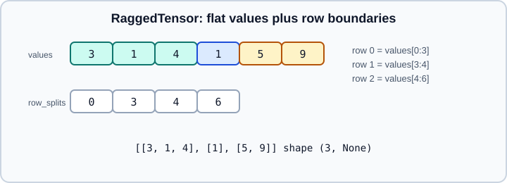
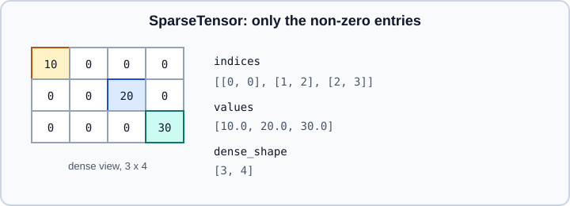

Ragged & Sparse Tensors
|
This content was generated with the assistance of AI and should be verified against the official documentation before being relied on in production. |
Dense tensors are rectangular. Two composite tensor types cover the cases where that is wasteful or impossible: tf.RaggedTensor for rows of different lengths (sentences, event lists, bounding boxes per image) and tf.SparseTensor for data that is almost all zeros (bag-of-words counts, one-hot features, large graphs). This page explains both representations, the operations on them, conversion to and from dense tensors, and how they travel through tf.data and Keras. Basic tensors and dtypes are on Tensors, Dtypes & Random Numbers; text pipelines using ragged tokens continue on Text, RNNs & Embeddings and tf.data.
It targets Python 3.13, TensorFlow 2.21 with Keras 3.15 (TensorFlow 2.22 is upcoming and not covered), and was checked against the official documentation on 2026-10-30. Examples were run on Python 3.13 with TensorFlow 2.21 and Keras 3.15 (CPU) on 2026-10-31. For the PyTorch counterparts see Sparse, Nested and Complex Tensors. NumPy has no ragged or sparse array type; masked arrays are the closest everyday concept.
Ragged tensors
A ragged tensor stores the concatenated values plus the boundaries between rows. The figure shows the default row_splits encoding.

import tensorflow as tf
rt = tf.ragged.constant([[3, 1, 4], [1], [5, 9]])
print(rt) # <tf.RaggedTensor [[3, 1, 4], [1], [5, 9]]>
print(rt.shape) # (3, None): the ragged dimension is None
print(rt.row_splits) # tf.Tensor([0 3 4 6], shape=(4,), dtype=int64)
print(rt.values) # tf.Tensor([3 1 4 1 5 9], shape=(6,), dtype=int32)
print(rt.bounding_shape()) # tf.Tensor([3 3], shape=(2,), dtype=int64)
print(rt.row_lengths()) # tf.Tensor([3 1 2], shape=(3,), dtype=int64)
print(rt.ragged_rank) # 1
# Build from parts, which is cheap and keeps values dense
rt2 = tf.RaggedTensor.from_row_lengths(values=[1, 2, 3, 4, 5], row_lengths=[2, 0, 3])
rt3 = tf.RaggedTensor.from_value_rowids(values=[1, 2, 3], value_rowids=[0, 0, 2], nrows=3)
rt4 = tf.RaggedTensor.from_row_splits(values=[1, 2, 3], row_splits=[0, 1, 3])
# Nested raggedness
deep = tf.ragged.constant([[[1, 2], [3]], [[4]], []])
print(deep.ragged_rank) # 2The number of ragged dimensions is the ragged_rank. Rows may be empty. The row_splits, row_lengths and value_rowids encodings describe the same partition; the constructors pick whichever you already have.
Operations
words = tf.ragged.constant([["the", "cat"], ["sat", "on", "the", "mat"], ["hi"]])
nums = tf.ragged.constant([[1.0, 2.0], [3.0], [4.0, 5.0, 6.0]])
print(nums * 2) # elementwise ops keep the ragged shape
print(tf.add(nums, nums))
print(tf.reduce_sum(nums, axis=1)) # tf.Tensor([ 3. 3. 15.], shape=(3,), dtype=float32)
print(tf.reduce_mean(nums, axis=1)) # tf.Tensor([1.5 3. 5. ], shape=(3,), dtype=float32)
print(tf.strings.length(words)) # <tf.RaggedTensor [[3, 3], [3, 2, 3, 3], [2]]>
print(tf.strings.upper(words))
print(nums[0]) # a regular tensor: tf.Tensor([1. 2.], ...)
print(nums[:, :2]) # ragged slice
print(tf.concat([nums, nums], axis=1)) # concatenate along the ragged axis
print(tf.concat([nums, nums], axis=0)) # stack rows
print(tf.ragged.map_flat_values(tf.math.sqrt, nums)) # apply a function to the flat valuesMost elementwise and reduction ops accept ragged inputs, and tf.ragged.map_flat_values(fn, ...) applies any op that works on dense tensors to the flat values. Binary operations require compatible row structure (or broadcast a scalar). There are also ragged-aware tf.ragged.boolean_mask, tf.gather, tf.where, tf.map_fn (with fn_output_signature=tf.RaggedTensorSpec(...)) and tf.keras layers that accept ragged input. Not every op has a ragged kernel; if one does not, convert with to_tensor first.
Converting between ragged, dense and sparse
rt = tf.ragged.constant([[1, 2, 3], [4], [5, 6]])
dense = rt.to_tensor(default_value=0) # pad to bounding shape
print(dense) # [[1 2 3] [4 0 0] [5 6 0]]
padded = rt.to_tensor(default_value=-1, shape=[None, 4]) # fixed second dimension
sp = rt.to_sparse()
back = tf.RaggedTensor.from_tensor(dense, padding=0) # strip trailing padding
back2 = tf.RaggedTensor.from_tensor(dense, lengths=[3, 1, 2])
from_sp = tf.RaggedTensor.from_sparse(sp)
print(rt.merge_dims(0, 1)) # flatten the first two axesRagged tensors in tf.data and Keras
import keras
ds = tf.data.Dataset.from_tensor_slices(tf.ragged.constant([[1, 2, 3], [4], [5, 6]]))
for row in ds.ragged_batch(2): # batches rows of different length into one RaggedTensor
print(row) # <tf.RaggedTensor [[1, 2, 3], [4]]>, then [[5, 6]]
# padded_batch is the dense alternative. It needs dense elements: on the ragged ds above it
# raises TypeError, so start from dense rows of different length (here a generator)
dense_ds = tf.data.Dataset.from_generator(
lambda: iter([[1, 2, 3], [4], [5, 6]]),
output_signature=tf.TensorSpec(shape=[None], dtype=tf.int32),
)
for row in dense_ds.padded_batch(2, padded_shapes=[None]):
print(row) # [[1 2 3] [4 0 0]], then [[5 6]]
# A Keras model with a ragged input
inp = keras.Input(shape=(None,), dtype="int32", ragged=True)
x = keras.layers.Embedding(100, 8)(inp)
x = keras.layers.GlobalAveragePooling1D()(x)
out = keras.layers.Dense(1)(x)
model = keras.Model(inp, out)Source: https://www.tensorflow.org/guide/ragged_tensor and https://keras.io/api/layers/core_layers/input/
Ragged support in Keras 3 depends on the backend: the TensorFlow backend can pass ragged inputs, while JAX and PyTorch backends operate on dense arrays, so portable code pads and masks instead. In Keras 3.15 keras.Input(..., ragged=True) works only on the TensorFlow backend; on JAX and PyTorch it raises ValueError: ragged=True is not supported with the jax backend (or torch). On the TensorFlow backend the Embedding, GlobalAveragePooling1D and Dense model above accepts a RaggedTensor batch, but not every layer does, so test your layer mix. Padding with a mask (Embedding(mask_zero=True)) is the simplest portable route; see Core Keras Layers.
Uniform versus ragged: when to use which
-
Use ragged when lengths vary a lot, padding would dominate the memory or compute, or the op needs the true lengths (string tokenization,
tf.strings.split,tf.strings.unicode_split). -
Use padded dense tensors with masks for transformer-style batches that fit accelerators well and for cross-backend Keras code.
-
tf.strings.spliton a vector of strings returns aRaggedTensor; this is the common entry point.
Sparse tensors
A tf.SparseTensor stores only the non-zero entries as three dense tensors: indices (int64, shape [n, rank]), values (shape [n]) and dense_shape (int64, shape [rank]). Indices must be sorted in row-major order for most ops.

sp = tf.sparse.SparseTensor(
indices=[[0, 0], [1, 2], [2, 3]],
values=[10.0, 20.0, 30.0],
dense_shape=[3, 4],
)
print(tf.sparse.to_dense(sp)) # zeros everywhere else
print(sp.indices.dtype, sp.dense_shape) # int64 [3 4]
# From a dense tensor
dense = tf.constant([[0, 1, 0], [2, 0, 3]])
sp2 = tf.sparse.from_dense(dense)
# Out-of-order indices need reordering
unordered = tf.sparse.SparseTensor([[1, 0], [0, 1]], [1.0, 2.0], [2, 2])
ordered = tf.sparse.reorder(unordered)
# Math
print(tf.sparse.add(sp, sp)) # sparse + sparse
print(tf.sparse.sparse_dense_matmul(sp, tf.ones([4, 2]))) # sparse @ dense
print(tf.sparse.reduce_sum(sp, axis=1))
print(sp * 2.0) # multiplying by a scalar keeps sparsity
# Slicing and filtering
print(tf.sparse.slice(sp, start=[0, 0], size=[2, 4]))
print(tf.sparse.retain(sp, tf.constant([True, False, True]))) # keep selected entries
print(tf.sparse.transpose(sp))The tf.sparse namespace is the set of supported operations. Typical use includes tf.sparse.sparse_dense_matmul for large sparse feature matrices, tf.sparse.to_indicator and tf.nn.embedding_lookup_sparse for sparse categorical inputs, and tf.sparse.add or tf.sparse.maximum for combination. Operations not listed there generally do not support sparse inputs, and some density-changing ops such as adding a scalar are deliberately unsupported because the result would be dense. Gradients through sparse_dense_matmul flow to the dense operand.
Sparse tensors in Keras and tf.data
inp = keras.Input(shape=(10_000,), sparse=True) # TensorFlow backend
x = keras.layers.Dense(64, activation="relu")(inp) # Dense accepts sparse inputs
out = keras.layers.Dense(1, activation="sigmoid")(x)
model = keras.Model(inp, out)
model.compile("adam", "binary_crossentropy")
ds = tf.data.Dataset.from_tensor_slices(
(tf.sparse.from_dense(tf.eye(8)), tf.range(8))
).batch(4)Source: https://www.tensorflow.org/guide/sparse_tensor and https://keras.io/api/layers/core_layers/input/
Dense, Embedding and several preprocessing layers (for example CategoryEncoding(sparse=True)) can consume or produce sparse tensors on the TensorFlow backend; other backends have their own sparse support and the rules differ, so check the layer documentation when switching backends (see Keras Preprocessing Layers). Sparse tensors also travel through tf.data, tf.function signatures (tf.SparseTensorSpec) and SavedModels; see tf.data and SavedModel & Signatures.
Composite tensors and specs
Both types are composite tensors: a Python object backed by several component tensors. They have matching specs (tf.RaggedTensorSpec, tf.SparseTensorSpec) used in input_signature, tf.data element specs and SavedModel signatures:
@tf.function(input_signature=[tf.RaggedTensorSpec(shape=[None, None], dtype=tf.int32)])
def total_len(r):
return tf.reduce_sum(r.row_lengths())
print(total_len(tf.ragged.constant([[1, 2], [3]]))) # 3
print(tf.nest.flatten(tf.ragged.constant([[1], [2, 3]]), expand_composites=True))Source: https://www.tensorflow.org/guide/ragged_tensor and https://www.tensorflow.org/guide/function
tf.nest.flatten(..., expand_composites=True) exposes the component tensors, which is how libraries serialize or shard composites. Checking isinstance(x, tf.RaggedTensor) is the reliable way to branch in Python code.
Pitfalls
-
A ragged tensor cannot be turned into one rectangular NumPy array. Use
rt.to_list()for nested Python lists, orto_tensorfirst for a dense, NumPy-convertible tensor. -
Do not assume
rt.shape[1]exists: ragged dimensions areNone. -
tf.SparseTensoris not a drop-in forscipy.sparse; conversion goes through COO triples or dense arrays. -
Unsorted sparse indices lead to wrong results or errors in several ops; call
tf.sparse.reorder. -
A sparse tensor with explicit zero values stores them;
tf.sparse.from_densedrops zeros, but arithmetic can produce stored zeros. -
to_tensorof a very ragged input can allocate a huge padded tensor; cap it withshape=[None, max_len]. -
TensorFlow 1
tf.contrib.layerssparse feature columns andtf.feature_columnbased pipelines are legacy; use preprocessing layers.